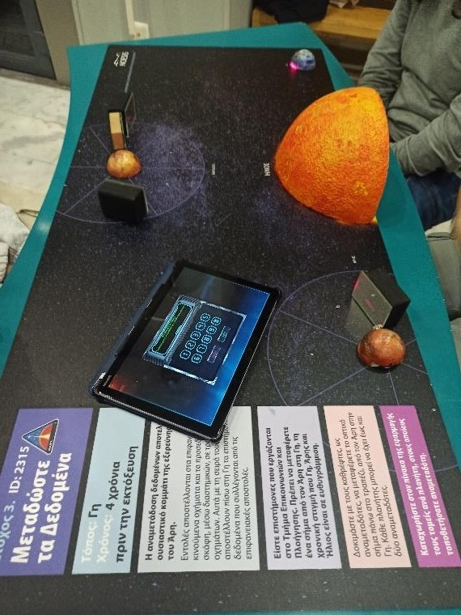
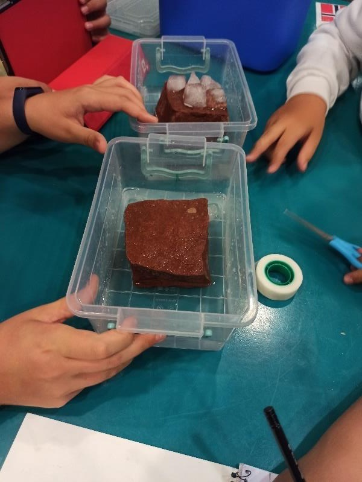
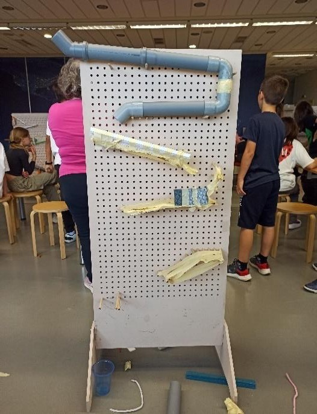
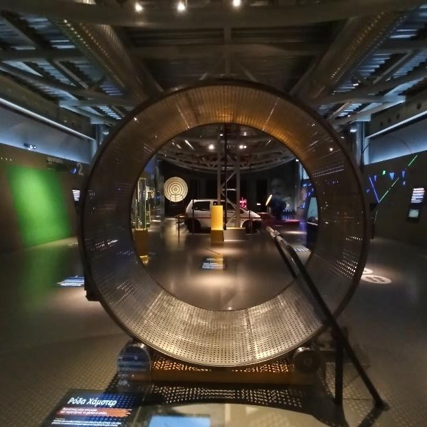

Two months at a science centre and museum, helping school groups and visitors take part in science: hands-on activities, interactive exhibits and guided explanations.
Period
April–May 2024
Organisation
NOESIS – Science Center and Museum of Technology
Location
Thessaloniki, Greece
Status
Completed
NOESIS in Thessaloniki. The silver dome houses the planetarium.
Overview
At NOESIS, I supported science-learning activities for school groups and museum visitors. The work moved between hands-on experiments, interactive exhibits, guided explanation and visitor support. The goal was always to help people do the science themselves rather than just watch it.
Learning through participation
Most of my time went into the educational programmes: activities for school groups on space, the environment, physics puzzles and engineering. I first watched an educator run each activity, then went from table to table explaining the task to small groups of pupils. I offered hints when a group was stuck, but left the experiment itself to them.
Mars colonisation (secondary school): groups plan a mission to Mars. They choose a crew, identify unknown chemicals, place satellites so they can still talk to Earth when the Sun is in the way, and pick a landing site.
Environmental programme (primary school): short experiments on melting ice, acid rain and pH, solar energy, and separating mixed materials as a model of recycling.
Physics and mathematics escape room (secondary school): teams solve puzzles to escape. When a group was missing a piece of knowledge, I gave a short explanation, for example how to convert km/h to m/s, and let them solve the puzzle themselves.
Tinkering: groups build a wall of ramps that slows a falling ball. It is a lesson in creative thinking and teamwork as much as in gravity.

The board for the Mars colonisation programme.

Melting-ice experiment: ice in the water versus ice on "land". Only one of them raises the water level.

A tinkering wall: ramps built to slow down a falling ball.
Museum interpretation
In the museum I welcomed visitors, checked entry and explained what there was to see. I also gave informal tours, mostly to families with children, in the Technopark, a hall of interactive physics exhibits.
I tried to make these tours as interactive as possible: letting visitors try each experiment themselves, so that they felt they had discovered the effect on their own.
I also followed many tours by the NOESIS guides. Watching their different styles showed me how much the guide's energy shapes how interested the children become.

The "hamster wheel" in the Technopark, an exhibit about producing energy.
Coming back
I had a really good time at NOESIS. It was a lovely place to work, so I was happy to be asked back after the internship ended.
The first time was for a one-day event, Astro Party, where I showed science experiments to families and let parents and children try them out together.
Later, I came back for a week in the summer to help with Explora, the NOESIS summer programme. Children spend their days at the museum, and the whole time is filled with science activities and games: building workshops, experiments, team games and screenings. It feels like a holiday camp, and the children learn a lot along the way.